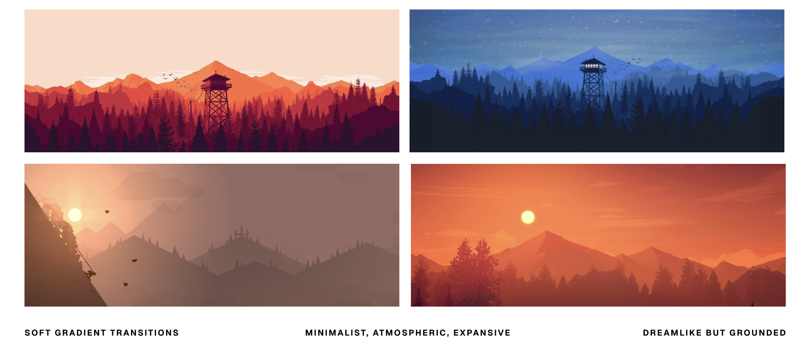
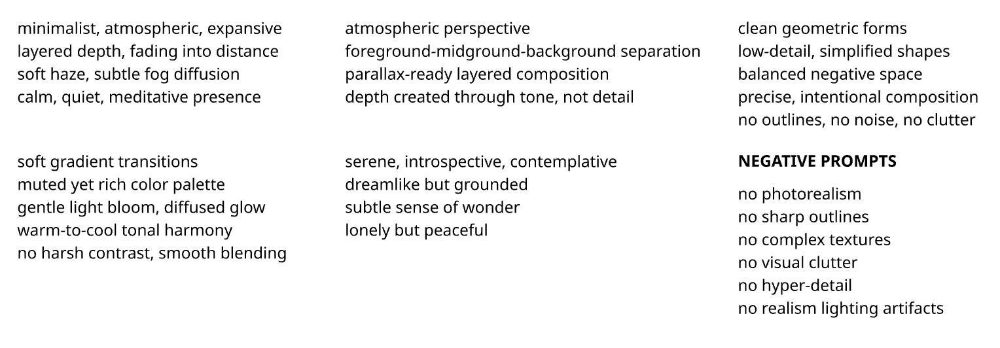
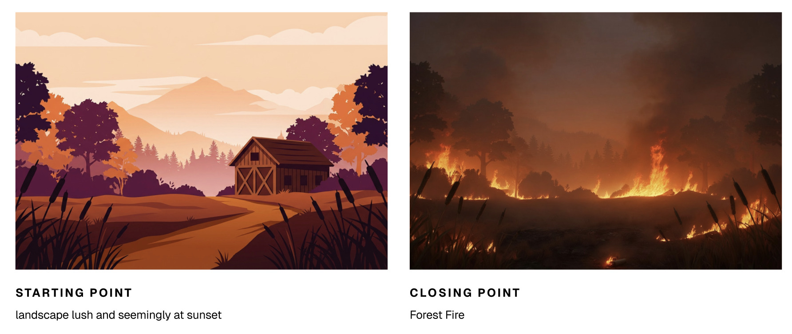
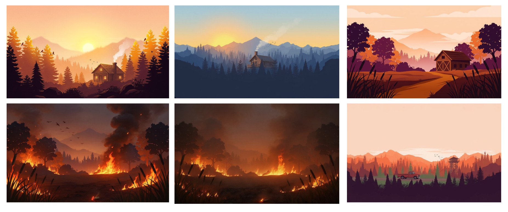

Watch Out
An award-winning project for the AI Jam hosted by the Parsons School of Design's Innovation Center. In a one-hour sprint, I rapidly prototyped a short film for wildlife preservation and fire prevention, urging cigarette smokers to recognize the danger of improperly discarding a butt. It won the Human + AI Co-Creation Award.
The 2025 LA Palisades Fire was started by a discarded cigarette.
Cigarette-related fires in the U.S. resulted in over $2 billion in costs associated with suppression and $6 billion in property losses. USDA Forest Service researchers found that even "fire safe" cigarettes can still start a wildfire, particularly in hot, dry, or windy conditions.
During the call [with 911], [the man who started the fire] typed a question into the ChatGPT app on his iPhone, asking, "Are you at fault if a fire is lift [sic] because of your cigarettes." (ChatGPT's response was "Yes," followed by an explanation.)
Anchoring the AI to a single, deliberate look.
With only an hour, the work was in the direction (pinning down a reference style, distilling it into a precise prompting vocabulary, then steering the generations frame by frame).
Visual references

I anchored the film to a minimal, atmospheric look (soft gradients, layered depth, a calm and contemplative mood) so the eventual turn to fire would land harder against the quiet.
Prompt examples
"Create an illustration based on the style of the reference image that features a rustic cabin in a forest full of evergreen trees. The shadows are soft and the sun is setting but still bright outside… Some small birds are visible in the trees and white smoke is gently billowing out of the cabin's chimney. The scene is peaceful and the background has a very soft focus."
"Start with a wide establishing shot of the first frame. The trees are swaying peacefully and there are birds calmly flying away… After 6 seconds, slowly start to pan to the last frame. During the pan, which is 10 seconds long, have the sky slowly getting darker and the trees and ground gradually becoming on fire… In the middle of the pan is a gradual transition from lush forest to a burning one."
Prompt inspiration

I distilled the reference style into a reusable vocabulary (atmosphere, depth, tone) plus a tight set of negative prompts to keep the model away from photorealism, clutter, and harsh lighting.
Start & end frames

The two endpoints Veo 3 interpolated between: a lush landscape at sunset, and the wildfire it becomes.
Generated explorations

A spread of generations explored during the sprint, testing palettes and the calm-to-catastrophe arc before locking the final frames.
From a calm forest to wildfire, in one unbroken pan.
The film opens on stillness (trees swaying, birds drifting away), then slowly turns. Over a single slow camera move, the sky darkens and the forest ignites, ending in the fire one carelessly discarded cigarette can start.